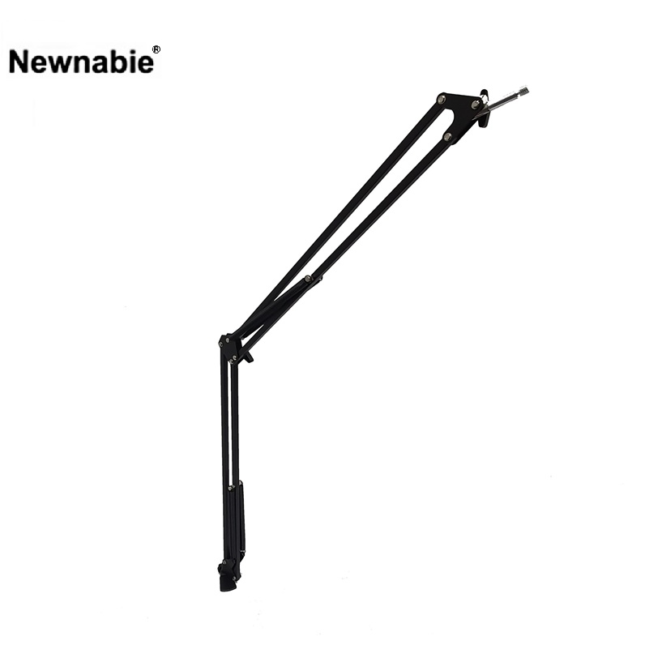

Newnabie NB-37은 책상이나 테이블 가장자리에 클램프로 직접 고정하여 수직 포스트를 세우는 테이블 클램프형 마이크 스탠드입니다. 바닥에 트라이포드 다리를 펼칠 공간이 부족하거나, 책상에서 마이크를 고정해 두고 싶을 때 이상적입니다. 1000 mm 높이로 데스크톱·방송 포지션에서 자연스러운 수음 각도를 확보합니다.

책상 가장자리에 클램프로 고정하는 테이블 클램프형 마이크 스탠드. 바닥 트라이포드 공간이 없거나 책상 위 고정 설치가 필요한 환경에 이상적입니다.
NB-37은 책상·테이블 가장자리에 클램프 조임으로 직접 고정해 사용하는 테이블 클램프형 마이크 스탠드입니다. 바닥에 스탠드 다리가 없어 발 밑 공간을 방해하지 않으며, 테이블 상판에 부착된 채로 위로 수직 포스트가 올라가는 구조입니다.
1000 mm의 수직 포스트 높이는 앉은 자세에서 입 높이에 정확히 맞출 수 있어 팟캐스트·1인 방송·온라인 강의·회의 등 데스크톱 중심 발화 환경에 최적화되어 있습니다. 640 g의 가벼운 무게로 설치 부담이 적으며, 장시간 고정 설치에도 흔들림이 적습니다.
| 모델명 | NB-37 |
|---|---|
| 타입 | Table Clamp Mic Stand (책상 고정형) |
| Height | 1000 mm |
| 설치 방식 | 테이블 클램프 조임 |
| Net Weight | 640 g |
| 권장소비자가 | 26,400 원 / 개 (VAT 포함) |
※ 본 사양 · 단가는 수입원(현대에이브이씨) 2026-01-01 스탠드 가격표 기준입니다.